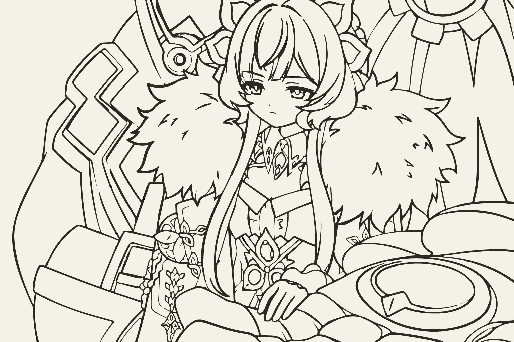

GRUNRAY / OPENING STUDY
从一笔轮廓，到一本未完的个人刊。单套分镜 · 12 秒 · 无声开场。

GrunRay
每一个故事，都从翻开这一页开始。
01 / 起笔
一些灵光，一些日常。先从纸上的一笔开始。
02 / 落版
关于代码，也关于生活。散落的片段，在这里装订成册。
03 / 开卷
欢迎来到我的个人刊。这本杂志，一直在写。
你好，我是 GrunRay。欢迎来到我的个人刊，这本杂志，一直在写。
你好，我是 GrunRay。欢迎来到我的个人刊。